State feedback and Optimal Linear Control
Prof. Dr. Marcos Rogério Fernandes
March 23, 2026
Objectives:
The objectives of this class are:
- Discuss the state feedback control;
- Introduce the concepts of robust stabilizability of polytopic uncertainty;
- Optimal control problem;
- Quadratic cost;
- Dynamic programming: Bellman equation;
- Show examples
Stability: continuous vs discrete

Lyapunov Stability: Discrete-time
A discrete-time state-space system is asymptotically stable if and only if there exists a matrix $P=P^\trp \in\mathbb{R}^{n\times n}$ such that
$$ P\succ 0 \\ A_d^\trp PA_d -P \prec 0 $$
Linear Matrix Inequality (LMI)Lyapunov Stability: continuous time
A continuous-time state-space system is asymptotically stable if and only if there exists a matrix $P=P^\trp \in\mathbb{R}^{n\times n}$ such that
$$ P\succ 0 \\ A^\trp P+PA \prec 0 $$
Linear Matrix Inequality (LMI)Polytopic System
Dynamic system: $$ \dot{x}=A(\alpha)x $$

Robust Lyapunov Stability: continuous time
$$ \exists P(\alpha)=P(\alpha)^\trp \succ 0 \\ A(\alpha)^\trp P(\alpha)+P(\alpha)A(\alpha) \prec 0\\ \forall \alpha \in \Lambda_N=\{\alpha \in \mathbb{R}^N:\sum_i\alpha_i=1 \text{ and } \alpha_i\ge 0\} $$
Parameter-dependent LMI!(infinite dimensional problem)
Quadratic Stability: continuous time
$$ \exists P=P^\trp \succ 0 \\ A(\alpha)^\trp P+PA(\alpha) \prec 0\\ \forall \alpha \in \Lambda_N=\{\alpha \in \mathbb{R}^N:\sum_i\alpha_i=1 \text{ and } \alpha_i\ge 0\} $$
Quadratic Stability: continuous time
$$ \exists P=P^\trp \succ 0 \\ A_1^\trp P+PA_1 \prec 0\\ A_2^\trp P+PA_2 \prec 0\\ \vdots \\ A_N^\trp P+PA_N \prec 0\\ $$
LMI!Robust Stability: continuous time
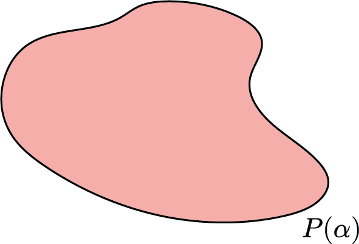
Quadratic Stability: continuous time
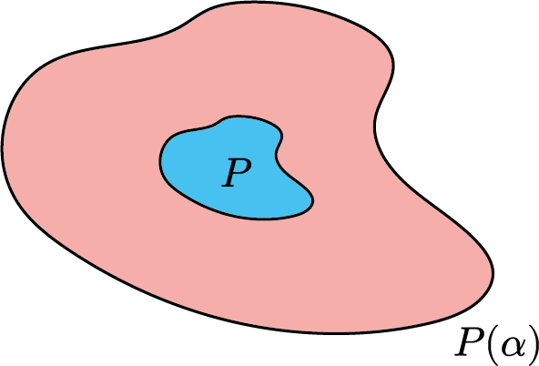
Affine Stability: continuous time
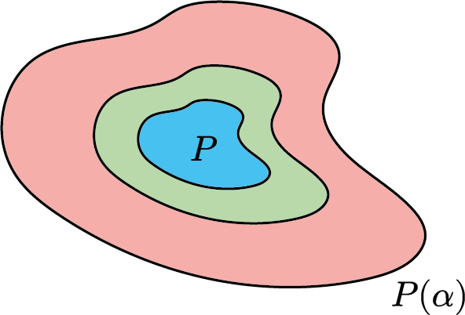
Affine Stability: continuous time
$$ A(\alpha)=\alpha_1A_1+\alpha_2A_2 $$
with $ \alpha_1+\alpha_2=1, \alpha_1\ge 0,\alpha_2\ge 0$.Define
$$ P(\alpha)=\alpha_1 P_1+\alpha_2P_2 $$
Affine Stability: continuous time
$$ \alpha_1 P_1+\alpha_2P_2 \succ 0\\ A(\alpha)^\trp(\alpha_1 P_1+\alpha_2P_2)+(\alpha_1 P_1+\alpha_2P_2)A(\alpha)\prec 0 $$
Thus, $$ P_1\succ 0,\quad P_2\succ 0\\ A_1^\trp P_1 + P_1 A_1 \prec 0,\quad A_2^\trp P_2+P_2A_2\prec 0 \\ A_1^\trp P_2 +P_2A_1+A_2^\trp P_1+P_1A_2 \prec 0 $$Pólya Theorem for Stability: continuous time
A polytopic system is stable if and only if there exist a $d>0$ such that $$ P(\alpha)=\Bigl(\sum_{i=1}^N \alpha_i\Bigr)^d\Bigl(\sum_{i=1}^N \alpha_i P_i\Bigr) \succ 0\\ A(\alpha)^\trp P(\alpha)+P(\alpha)A(\alpha)\prec 0 $$ for all $\alpha \in \Lambda_N$.
Pólya Theorem for Stability: continuous time
$$ P(\alpha)=(\alpha_1+\alpha_2)(\alpha_1P_1+\alpha_2P_2) \succ 0 $$
Example: d=2$$ P(\alpha)=(\alpha_1^2+2\alpha_1\alpha_2+\alpha_2^2)(\alpha_1P_1+\alpha_2P_2) \succ 0 $$
Control via State Feedback - Discrete-time

$$ u_k=-Kx_k $$
Example: Inverted Pendulum
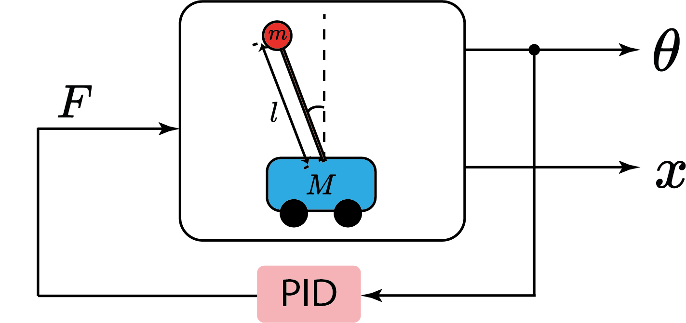
Example: Inverted Pendulum
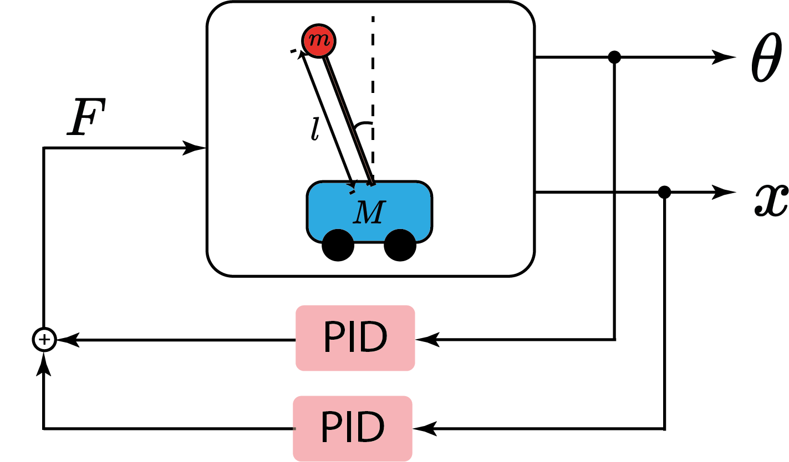
State Feedback
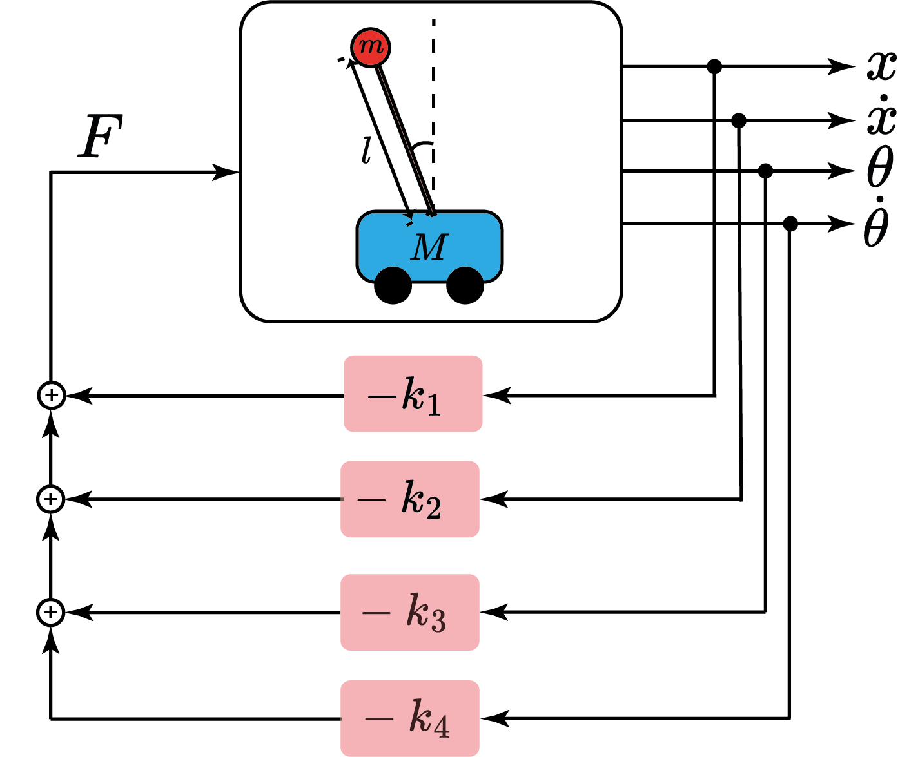
State Feedback

Control via State Feedback
$$ x_{k+1}=Ax_k+Bu_k=Ax_k-BKx_k $$
Therefore, the closed-loop dynamics is$$ x_{k+1}=(A-BK)x_k $$
Asymptotically stable if and only if $$ |\lambda\{A-BK\}| < 1 $$Characteristic Equation
$$ x_{k+1}=Ax_k+Bu_k $$
$$ \Delta(A)=\det(\lambda I-A) $$
The roots of the polynomial $\Delta(A)$ are the eigenvalues of $A$: $$ \lambda\{A\}=\{\lambda_i: \det(\lambda_iI-A)=0,i=1,\ldots,n\} $$Design by Pole Placement
$$ x_{k+1}=Ax_k+Bu_k\\ u_k=-Kx_k $$
$$ \Delta_d(A-BK)=(z-p_1)(z-p_2)\cdots(z-p_n) $$
where $p_1,p_2,\ldots,p_n$ are the desired closed-loop poles!Design by Pole Placement
$$ x_{k+1}=Ax_k+Bu_k\\ u_k=-Kx_k $$
$$ \Delta_d(A-BK)=z^n+\beta_1z^{n-1}+\cdots+\beta_{n-1}z+\beta_n $$
where $p_1,p_2,\ldots,p_n$ are the desired closed-loop poles!Controllable Canonical Form
$$ x_{k+1}=\begin{bmatrix} 0 & 1 & 0 & \cdots & 0\\ 0 & 0 & 1 & \cdots & 0\\ \vdots & \vdots & \vdots & \ddots & \vdots \\ 0 & 0 & 0 & \cdots & 1\\ -a_n & -a_{n-1} & -a_{n-2} & \cdots & -a_1 \end{bmatrix}x_k+\begin{bmatrix} 0\\ 0\\ \vdots\\ 0\\ 1 \end{bmatrix}u_k $$
Controllable Canonical Form
Transfer function (SISO): $$ \frac{Y(z)}{U(z)}=\frac{z^m+b_1z^{m-1}+\cdots+b_{m-1}z+b_m}{z^n+a_1z^{n-1}+\cdots+a_{n-1}z+a_n}, m\le n $$
If there are no cancellations of zeros with poles, then the system is controllable!
Controllable Canonical Form
Given matrices $A$ and $B$ in the Controllable Canonical Form, we have $$ \det(\lambda I - (A-BK))=z^{n}+\beta_1z^{n-1}+\cdots+\beta_{n-1}z+\beta_n $$
which results in$$ K=\begin{bmatrix} (\beta_n-a_n) & (\beta_{n-1}-a_{n-1}) & \cdots & (\beta_1-a_1) \end{bmatrix} $$
Ackermann's Formula (SISO)
$$ K=\begin{bmatrix} 0 & \cdots & 1 \end{bmatrix}\mathcal{C}^{-1}\gamma(A) $$
note: $\gamma(A)=A^{n}+\beta_1A^{n-1}+\cdots+\beta_{n-1}A+\beta_n I$Polytopic System $(A,B)(\alpha)$
$$ A(\alpha)=\alpha_1A_1+\alpha_2A_2+\cdots+\alpha_NA_N\\ B(\alpha)=\alpha_1B_1+\alpha_2B_2+\cdots+\alpha_NB_N\\ $$ where $\alpha_i\in\mathbb{R}^+$ and $\sum_{i=1}^N \alpha_i=1$.
Dynamic system: $$ x_{k+1}=A(\alpha)x_k+B(\alpha)u_k $$ How to design a state feedback controller?Lyapunov Stability: Discrete-time
$$ P\succ 0 \\ (A-BK)^\trp P(A-BK) -P \prec 0 $$
This is a LMI?Schur's Complement
$$ \left[\begin{array}{ll} Q & S \\ S^\trp & R \end{array}\right]\succ 0 \\ \Longleftrightarrow \\ R\succ 0,\quad Q-SR^{-1} S^{\trp}\succ 0 $$ or $$ Q\succ 0, \quad R-S^\trp Q^{-1} S\succ 0 $$
Lyapunov Stability: Discrete-time
$$ P\succ 0 \\ (A-BK)^\trp P(A-BK) -P \prec 0 $$
Lyapunov Stability: Discrete-time
$$ P\succ 0 \\ P -(A-BK)^\trp PP^{-1}P(A-BK) \succ 0 $$
Lyapunov Stability: Discrete-time
$$ P\succ 0 \\ \begin{bmatrix} P & (A-BK)^\trp P\\ P(A-BK) & P \end{bmatrix} \succ 0 $$
Lyapunov Stability: Discrete-time
$$ P\succ 0 \\ \begin{bmatrix}P^{-1} & 0 \\ 0 & P^{-1}\end{bmatrix} \begin{bmatrix} P & (A-BK)^\trp P\\ P(A-BK) & P \end{bmatrix} \begin{bmatrix}P^{-1} & 0 \\ 0 & P^{-1}\end{bmatrix} \succ 0 $$
Lyapunov Stability: Discrete-time
$$ P\succ 0 \\ \begin{bmatrix} P^{-1} & P^{-1}(A-BK)^\trp\\ (A-BK)P^{-1} & P^{-1} \end{bmatrix} \succ 0 $$
Lyapunov Stability: Discrete-time
$$ P\succ 0 \\ \begin{bmatrix} P^{-1} & P^{-1}A^\trp-P^{-1}K^\trp B^\trp\\ AP^{-1}-BKP^{-1} & P^{-1} \end{bmatrix} \succ 0 $$
Lyapunov Stability: Discrete-time
$$ W\succ 0 \\ \begin{bmatrix} W & WA^\trp-WK^\trp B^\trp\\ AW-BKW & W \end{bmatrix} \succ 0 $$
$$ W=P^{-1} $$
Lyapunov Stability: Discrete-time
$$ W\succ 0 \\ \begin{bmatrix} W & WA^\trp-\underbrace{WK^\trp}_{Z^\trp } B^\trp\\ AW-B\underbrace{KW}_{Z} & W \end{bmatrix} \succ 0 $$
Lyapunov Stability: Discrete-time
$$ W\succ 0 \\ \begin{bmatrix} W & WA^\trp-Z^\trp B^\trp \\ AW-BZ & W \end{bmatrix}\succ 0 $$
and the stabilizing feedback gain is given by: $$ K=ZW^{-1} $$Robust Lyapunov Stability: Discrete-time
$$ W\succ 0 \\ \begin{bmatrix} W & (WA^\trp_i-Z^\trp B_i^\trp) \\ (A_iW-B_iZ) & W \end{bmatrix}\succ 0 , \quad \forall i=1,\ldots,N $$
and the stabilizing feedback gain is given by: $$ K=ZW^{-1} $$Lyapunov Stability: continuous time
A closed-loop continuous-time state-space system is asymptotically stable if and only if there exists a matrix $P=P^\trp \in\mathbb{R}^{n\times n}$ and $K\in\mathbb{R}^{m\times n}$ such that
$$ P\succ 0 \\ (A-BK)^\trp P+P(A-BK) \prec 0 $$
This is a LMI?Lyapunov Stability: continuous time
A closed-loop continuous-time state-space system is asymptotically stable if and only if there exists a matrix $P=P^\trp \in\mathbb{R}^{n\times n}$ and $K\in\mathbb{R}^{m\times n}$ such that
$$ P\succ 0 \\ A^\trp P+PA -K^\trp B^\trp P-PBK \prec 0 $$
This is a BMI!Lyapunov Stability: continuous time
A closed-loop continuous-time state-space system is asymptotically stable if and only if there exists a matrix $P=P^\trp \in\mathbb{R}^{n\times n}$ and $K\in\mathbb{R}^{m\times n}$ such that
$$ P\succ 0 \\ P^{-1}\Bigl(A^\trp P+PA -K^\trp B^\trp P-PBK\Bigr) P^{-1} \prec 0 $$
This is a BMI!Lyapunov Stability: continuous time
A closed-loop continuous-time state-space system is asymptotically stable if and only if there exists a matrix $P=P^\trp \in\mathbb{R}^{n\times n}$ and $K\in\mathbb{R}^{m\times n}$ such that
$$ P\succ 0 \\ P^{-1}A^\trp +AP^{-1} -P^{-1}K^\trp B^\trp -B KP^{-1} \prec 0 $$
Lyapunov Stability: continuous time
A closed-loop continuous-time state-space system is asymptotically stable if and only if there exists a matrix $W=W^\trp \in\mathbb{R}^{n\times n}$ and $K\in\mathbb{R}^{m\times n}$ such that
$$ W\succ 0 \\ WA^\trp +AW -\underbrace{WK^\trp}_{Z^\trp } B^\trp -B \underbrace{KW}_{Z} \prec 0 $$
Lyapunov Stability: continuous time
$$ W\succ 0 \\ WA^\trp+AW-Z^\trp B^\trp-BZ\prec 0 $$
and the stabilizing feedback gain is given by: $$ K=ZW^{-1} $$Robust Lyapunov Stability: continuous time
$$ W\succ 0 \\ WA_i^\trp+A_iW-Z^\trp B_i^\trp-B_iZ\prec 0 ,\quad i=1,\ldots,N $$
and the stabilizing feedback gain is given by: $$ K=ZW^{-1} $$Optimal Control: discrete-time
Objective: Obtain a sequence of control actions $\{u_k\}_{k=0}^{N-1}$ that drives $x\to x_N$ and minimizes a performance criterion (cost function).
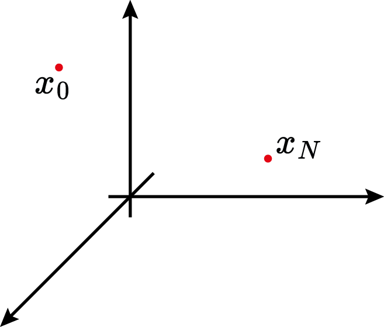
Optimal Control: discrete-time
Objective: Obtain a sequence of control actions $\{u_k\}_{k=0}^{N-1}$ that drives $x\to x_N$ and minimizes a performance criterion (cost function).
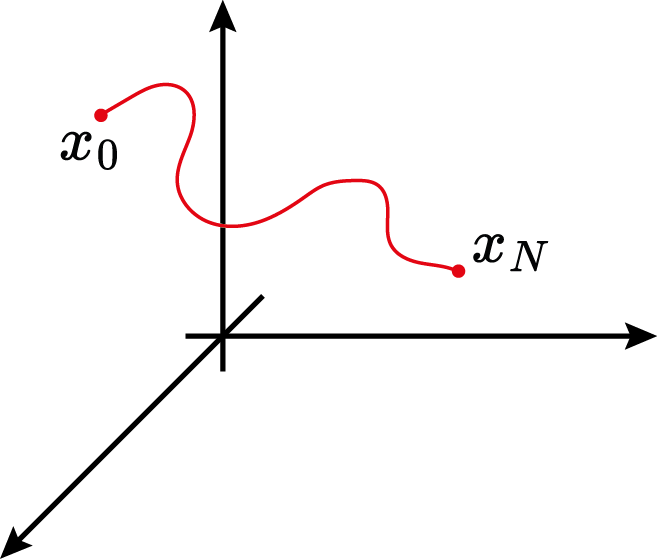
Optimal Control: discrete-time
Objective: Obtain a sequence of control actions $\{u_k\}_{k=0}^{N-1}$ that drives $x\to x_N$ and minimizes a performance criterion (cost function).
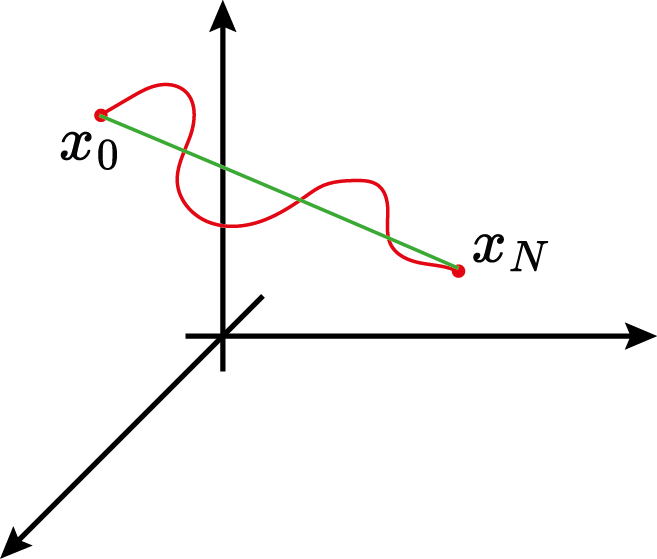
Optimal Control: discrete-time
Objective: Obtain a sequence of control actions $\{u_k\}_{k=0}^{N-1}$ that drives $x\to x_N$ and minimizes a performance criterion (cost function).
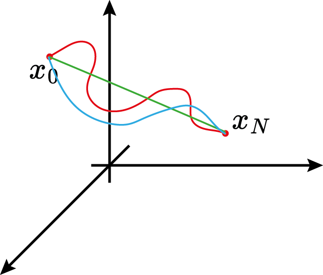
Optimal Control: discrete-time
Mathematical programming (optimization) problem: $$ \min_{u_0,u_1,\ldots,u_{N-1}} \quad J\\ \text{subject to} \\ x_{k+1}=f(x_k,u_k)\\ x_k\in\mathcal{X}\\ u_k\in\mathcal{U} $$
Optimal Control: continuous-time
Mathematical programming (optimization) problem: $$ \min_{u(t)\in\mathcal{T}} \quad J\\ \text{subject to} \\ \dot{x}=f(x,u)\\ x\in\mathcal{X}\\ u\in\mathcal{U}\\ \forall t\in[0,T] $$
Linear Quadratic Regulator
$$ x_{k+1}=Ax_k+Bu_k\\ x_k\in\mathbb{R}^n\\ u_k\in\mathbb{R}^m $$
$ J_{0\to N}=\sum_{k=0}^{N-1} x_k^T Qx_k+u_k^TRu_k+x_N^T P_N x_N $
$Q=Q^T\succeq 0,\quad R=R^\trp \succ 0$Optimal Control: LQR
Mathematical programming (optimization) problem: $$ \min_{u_0,u_1,\ldots,u_{N-1}} \quad \sum_{k=0}^{N-1} x_k^T Qx_k+u_k^TRu_k+x_N^T P_N x_N \\ \text{subject to} \\ x_{k+1}=Ax_k+Bu_k\\ x_k\in\mathbb{R}^n\\ u_k\in\mathbb{R}^m $$
Bellman's Principle of Optimality
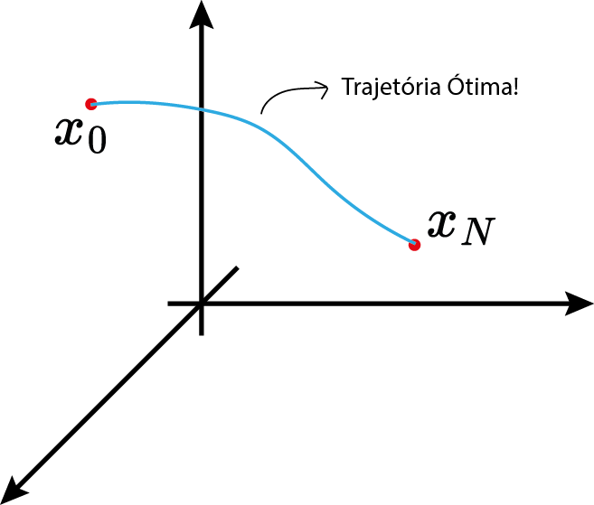
Bellman's Principle of Optimality
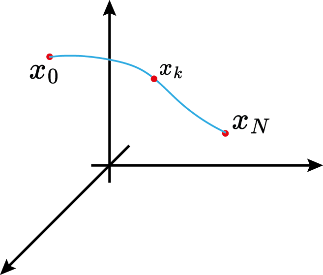
Bellman's Principle of Optimality
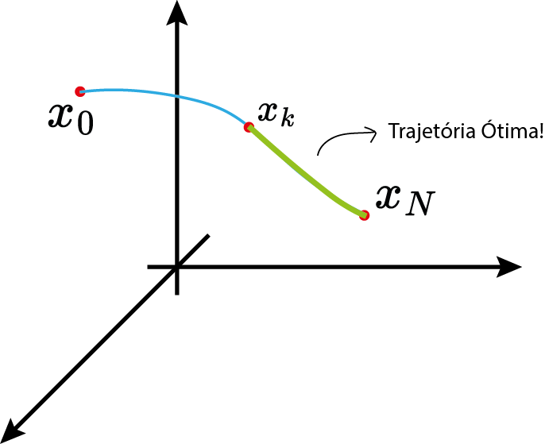
Bellman's Principle of Optimality
Then, for any $k\in (0,N)$, we have: $\{x_k^*,x_{k+1}^*,\ldots,x_N^*\}$ and $\{u_k^*,u_{k+1}^*,\ldots,u_{N-1}^*\}$ are the optimal state trajectory and the optimal control actions, respectively, that minimize $J_{k\to N}$
Bellman Equation
$$ V_k(x_k)=\min_{u_k} [\underbrace{x_k^\trp Q x_k + u_k^\trp R u_k}_{\text{stage cost}} + \underbrace{V_{k+1}(x_{k+1})}_{\text{``to-go'' cost}}] $$
Basis of dynamic programming! (Reinforcement Learning, etc)
Bellman Equation
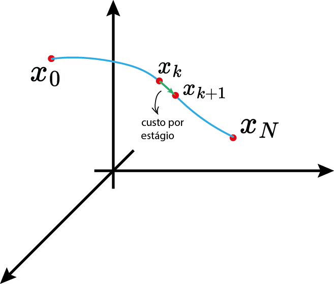
Bellman Equation
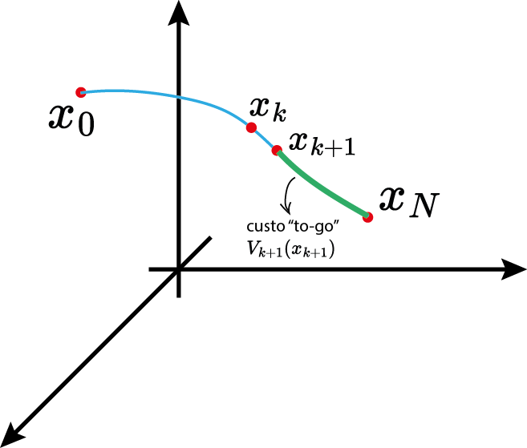
Bellman Equation
$$ V_k(x_k)=\min_{u_k} [x_k^\trp Q x_k + u_k^\trp R u_k + V_{k+1}(x_{k+1})] $$
Hypothesis:
$$ V_{k+1}(x_{k+1})=x_{k+1}^\trp P_{k+1}x_{k+1} $$
$P_{k+1}=P_{k+1}^\trp \succ 0$Bellman Equation
$$ V_k(x_k)=\min_{u_k} [x_k^\trp Q x_k + u_k^\trp R u_k + x_{k+1}^\trp P_{k+1}x_{k+1}] $$
LQR: Quadratic cost + linear dynamics results in a convex problem! (has only one minimum)
$$ \frac{\partial V_k(x_k)}{\partial u_k}=0 $$Properties of Derivatives in $\mathbb{R}^n$
Optimal Control Solution (LQR):
$$ u^*_k=-\underbrace{(R+B^\trp P_{k+1}B)^{-1}B^\trp P_{k+1}A}_{K}x_k $$
- State feedback!
- Gain depends on $P_{k+1}$.
Bellman Equation
$$ V_k(x_k)=x_k^\trp Q x_k + (u_k^*)^\trp R u_k^* + x_{k+1}^\trp P_{k+1}x_{k+1}\\ x_{k+1}=Ax_k+Bu^*_k $$
Bellman Equation
$$ x_k^\trp P_k x_k \\=x_k^\trp(Q +A^\trp P_{k+1}A-A^\trp P_{k+1}B(R+B^\trp P_{k+1}B)^{-1}B^\trp P_{k+1}A )x_k $$
Thus,Discrete-Time Riccati Equation: $$ P_k =Q +A^\trp P_{k+1}A-A^\trp P_{k+1}B(R+B^\trp P_{k+1}B)^{-1}B^\trp P_{k+1}A $$
Solution of the Riccati Equation
$$ P_{N-1} =Q +A^\trp P_{N}A-A^\trp P_{N}B(R+B^\trp P_{N}B)^{-1}B^\trp P_{N}A $$
For $k=N-2$,$$ P_{N-2} =Q +A^\trp P_{N-1}A-A^\trp P_{N-1}B(R+B^\trp P_{N-1}B)^{-1}B^\trp P_{N-1}A $$
For $k=N-3,\ldots, 1, 0$,$$ P_k =Q +A^\trp P_{k+1}A-A^\trp P_{k+1}B(R+B^\trp P_{k+1}B)^{-1}B^\trp P_{k+1}A $$
LQR Control (Linear Quadratic Regulator)
$$ J_\infty = \lim_{N\to \infty} \sum_{k=0}^{N-1} x_k^T Qx_k+u_k^TRu_k+x_N^T P_N x_N, $$
with $$ Q=Q^T\succeq 0,\quad R=R^\trp \succ 0 $$Stationary Solution of the Riccati Equation
$$ P_\infty =Q +A^\trp P_\infty A-A^\trp P_\infty B(R+B^\trp P_\infty B)^{-1}B^\trp P_\infty A $$
Optimal Control Law: $$ u^*_k=-\underbrace{(R+B^\trp P_\infty B)^{-1}B^\trp P_\infty A}_{K}x_k $$
Stationary Solution of the Riccati Equation
$$ P_\infty =Q +A^\trp P_\infty A-A^\trp P_\infty B(R+B^\trp P_\infty B)^{-1}B^\trp P_\infty A $$
- LQR control ensures stability!
LQR Control (Linear Quadratic Regulator)
Stability implies $$ J_\infty = \lim_{N\to \infty} \sum_{k=0}^{N-1} x_k^T Qx_k+u_k^TRu_k+x_N^T P_N x_N < \infty $$
with $$ Q=Q^T\succeq 0,\quad R=R^\trp \succ 0 $$Performance Matrices $Q$ and $R$
$$ Q=\begin{bmatrix}q_{11}\\ & q_{22} \\ & & \ddots \\ & & & q_{nn}\end{bmatrix},\quad R=\begin{bmatrix}r_{11}\\ & r_{22} \\ & & \ddots \\ & & & r_{mm}\end{bmatrix} $$
with $$ q_{ii}=\frac{1}{(x_i^\text{max})^2},\quad r_{ii}=\frac{1}{(u_i^\text{max})^2} $$LQR Control (Linear Quadratic Regulator)
$$ V_0(x_0) = \lim_{N\to \infty} \sum_{k=0}^{N-1} x_k^T Qx_k+u_k^TRu_k+x_N^T P_N x_N = x_0^\trp P_\infty x_0 $$
with $$ Q=Q^T\succeq 0,\quad R=R^\trp \succ 0 $$LQR Control (Linear Quadratic Regulator)
$ J_\infty = x_0^\trp P_\infty x_0 $

Optimal Control: continuous-time
Mathematical programming (optimization) problem: $$ \min_{u(t)\in\mathcal{T}} \quad J\\ \text{subject to} \\ \dot{x}=f(x,u)\\ x\in\mathcal{X}\\ u\in\mathcal{U}\\ \forall t\in[0,T] $$
Linear Quadratic Regulator: continuous-time
$$ \dot{x}=Ax+Bu\\ x(t)\in\mathbb{R}^n\\ u(t)\in\mathbb{R}^m $$
$ J_{0\to T}=\int_{0}^{T} (x^T Qx+u^TRu)dt+g(X_T) $
$Q=Q^T\succeq 0,\quad R=R^\trp \succ 0$Optimal Control LQR in continuous-time
Mathematical programming (optimization) problem: $$ \min_{u(t)\in\mathcal{T}} \quad \int_{0}^{T} (x^T Qx+u^TRu)dt+g(X_T) \\ \text{subject to} \\ \dot{x}=Ax+Bu\\ x\in\mathbb{R}^n\\ u\in\mathbb{R}^m $$
Cost to go
$$ V(x(t),t)=\min_{u(t)\in\mathcal{T}}\Bigl[ \int_{t}^{T} (x^T Qx+u^TRu)dt+g(X_T)\Bigr]\\ $$
Thus, $$ V(x_0,0)=\min_{u(t)\in\mathcal{T}}\Bigl[ \int_{0}^{T} (x^T Qx+u^TRu)dt+g(X_T)\Bigr]\\ $$Optimality Principle
$$ V(x(t),t)=\min_{u(t)\in\mathcal{T}}\Bigl[(x^T Qx+u^TRu)\delta t+V(x(t+\delta t),t+\delta t)\Bigr]\\ $$
Equation of Hamilton-Jacobi-Bellman
$$ -\frac{\partial V}{\partial t}=\min_{u(t)\in\mathcal{T}}\Bigl[ x^T Qx+u^TRu+\frac{\partial V}{\partial x}^\trp (Ax+Bu)\Bigr]\\ $$
Hypothesis: $$ V(x,t)=x(t)^\trp P(t)x(t)\\ P(t)=P(t)^\trp \succ 0 $$Stationary Solution of the Riccati Equation
$$ Q +A^TP_\infty +P_\infty A -P_\infty BR^{-1}B^\trp P_\infty =0 $$
Optimal Control Law: $$ u^*=-\underbrace{R^{-1}B^\trp P_\infty}_{K}x $$
Homework (T5)
- Design an LQR controller for the inverted pendulum in Discrete-time.
- Next, consider an uncertainty in the mass of the inverted pendulum. Implement a MATLAB script to stabilize the polytopic uncertain inverted pendulum $(A,B)(\alpha)$ in discrete-time using Yalmip and SeDuMi and compare with the LQR controller.
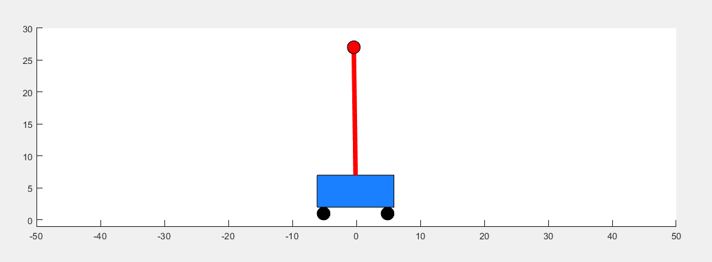